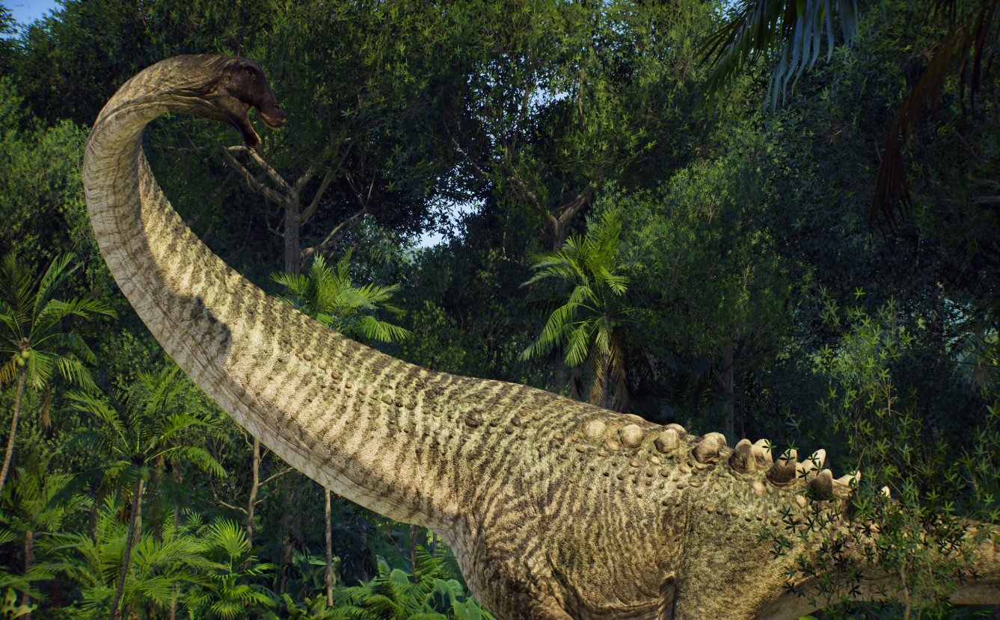
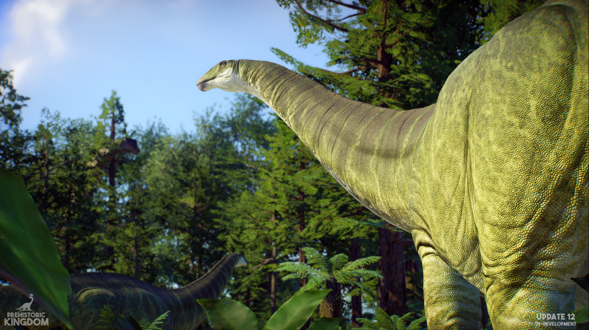
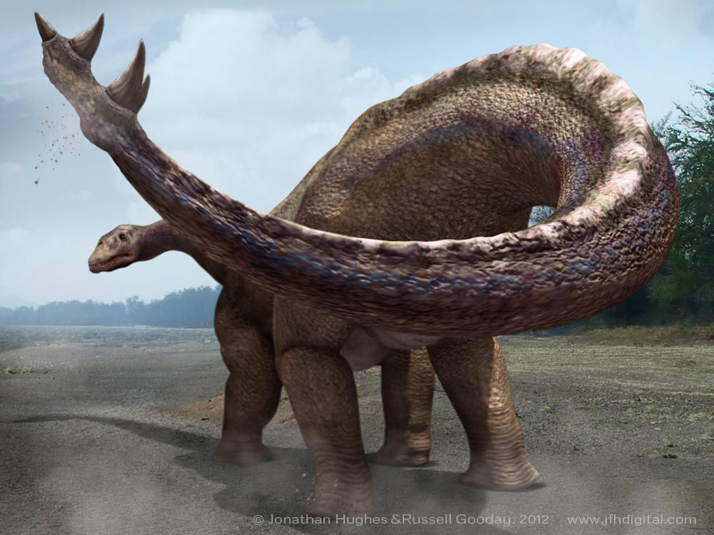
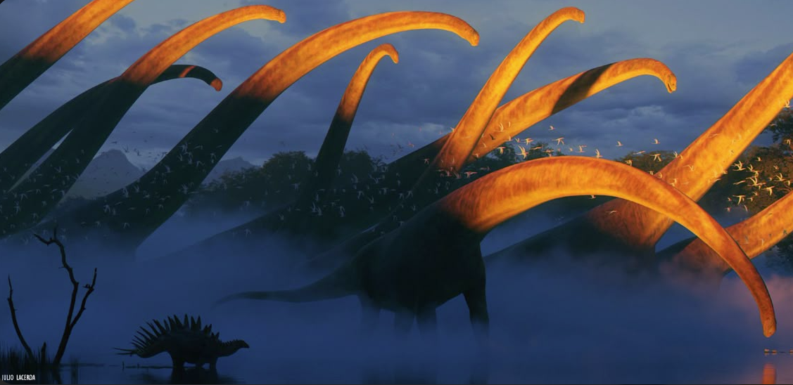

Argentinosaurus

Brachiosaurus

Diplodocus

Apatosaurus

Shunosaurus

Brontosaurus

Sauroposeidon

Amargasaurus

Mamenchisaurus

Camarasaurus

Argentinosaurus huinculensis
- Name: Argentinosaurus huinculensis
- Diet: Herbivore
- Length: 30-35 m (98-115 ft)
- Height: ~7 m at shoulder (23 ft)
- Weight: 65-80 tonnes (72-88 short tons)
- Scientific Classification: Dinosauria; Saurischia; Sauropodomorpha; Titanosauria; Lognkosauria; Argentinosaurus
- Location / Formation: Argentina (Huincul Formation)
- Time: Late Cretaceous (Cenomanian), ~96-92 Ma

Overview
Argentinosaurus is a contender for the most massive land animal to have ever walked the Earth. As a giant titanosaur from the Late Cretaceous of Patagonia, it represents the extreme end of sauropod and dinosaurian gigantism, a true behemoth whose discovery pushed the known limits of animal size.
Discovery
Discovered in 1987 by a rancher in Neuquén Province, Argentina. It was formally described in 1993 by Argentine paleontologists José F. Bonaparte and Rodolfo Coria. The fossils, though fragmentary, are diagnostic and enormous, including vertebrae over 1.5 meters tall and a tibia (shin bone) 1.55 meters long.
Evolution
It was a member of the Lognkosauria, a clade of exceptionally large titanosaurs within the wider Titanosauria group. Titanosaurs were the last surviving great sauropods, flourishing on the southern continents (Gondwana) during the Cretaceous while diplodocids and others declined in the north.
Physical Description
Based on related titanosaurs, Argentinosaurus was a colossal quadruped with a long neck and tail, and an immensely wide-bodied, barrel-shaped torso. Its vertebrae were massively constructed with complex struts to support its weight. It had a small head, wide-gauge limbs, and its back was likely covered in a mosaic of osteoderms (bony skin armor), a common feature among titanosaurs.
Ecology
It lived in a floodplain environment crisscrossed by rivers. Its sheer size was its primary defense against contemporary predators like the giant carcharodontosaurid Mapusaurus. As a high-browser, it would have consumed vast quantities of conifers, cycads, and other tough vegetation, shaping the landscape around it.
Extinction Legacy
Argentinosaurus is the benchmark for discussions about the upper limits of terrestrial animal mass. Its discovery cemented Patagonia's status as the land of giant titanosaurs and fueled scientific inquiry into the biological and physical constraints on extreme gigantism in dinosaurs.
Brachiosaurus altithorax
- Name: Brachiosaurus altithorax
- Diet: Herbivore
- Length: 18-22 m (59-72 ft)
- Height: ~6.5 m at shoulder (21 ft)
- Weight: 28-58 tonnes (31-64 short tons)
- Scientific Classification: Dinosauria; Saurischia; Sauropodomorpha; Macronaria; Brachiosauridae; Brachiosaurus
- Location / Formation: USA (Morrison Formation)
- Time: Late Jurassic (Kimmeridgian-Tithonian), ~154-150 Ma

Overview
Brachiosaurus is the archetypal high-browsing sauropod, famous for its giraffe-like proportions with longer forelimbs than hindlimbs, giving it a characteristically sloping back. It was one of the tallest and most massive dinosaurs of the Jurassic Morrison Formation.
Discovery
Discovered in 1900 in the Grand River Valley of Colorado, USA, by paleontologist Elmer S. Riggs. Riggs named it Brachiosaurus altithorax ("deep-chested arm lizard") in 1903, recognizing its unique limb proportions. The much more complete mounted skeleton in Berlin's Museum für Naturkunde is based on Giraffatitan material from Africa, which was long considered a species of Brachiosaurus.
Evolution
Brachiosaurus is the type genus of the Brachiosauridae, a family within the Macronaria. This group is characterized by large nasal openings on top of the skull, spoon-shaped teeth, and often longer forelimbs. Brachiosaurids represent a distinct evolutionary strategy for high-level browsing compared to the low- and mid-level feeding of contemporaneous diplodocids.
Physical Description
Its most defining feature was its limb proportions: its humerus (upper arm bone) was longer than its femur (thigh bone). This gave it a steeply inclined body, with a very long neck held more vertically than other sauropods. It had a distinctive, boxy skull with a prominent bony crest above the nostrils. Its neck contained 13 very long vertebrae.
Ecology
In the semi-arid floodplains and conifer forests of the Morrison Formation, Brachiosaurus was a specialized high-canopy browser. It could feed on foliage 9 meters or more above the ground, a niche inaccessible to most other herbivores like Diplodocus and Stegosaurus, reducing direct competition.
Extinction Legacy
Brachiosaurus is one of the most iconic and recognizable dinosaurs in popular culture, its silhouette defining the "dinosaur" for generations (most famously in the first Jurassic Park film). Scientifically, it is the model for understanding brachiosaurid anatomy and the high-browsing sauropod ecological niche.
Diplodocus carnegii
- Name: Diplodocus carnegii
- Diet: Herbivore
- Length: 24-27 m (79-89 ft)
- Height: ~4 m at shoulder (13 ft)
- Weight: 12-15 tonnes (13-17 short tons)
- Scientific Classification: Dinosauria; Saurischia; Sauropodomorpha; Diplodocoidea; Diplodocidae; Diplodocinae; Diplodocus
- Location / Formation: USA (Morrison Formation)
- Time: Late Jurassic (Kimmeridgian-Tithonian), ~154-152 Ma

Overview
Diplodocus is the quintessential long, slender sauropod, famous for its incredible length, whip-like tail, and horizontal neck posture. It represents the extreme of the "beam-and-cable" body plan in dinosaurs, built for lightweight efficiency and specialized low-to-mid-level feeding.
Discovery
The first skeleton was discovered in 1877 by S.W. Williston in Canon City, Colorado. It was described in 1878 by Othniel Charles Marsh. The most famous species, D. carnegii, was named after industrialist Andrew Carnegie, whose funding led to the excavation of a near-complete skeleton in 1899. Casts of this skeleton, nicknamed "Dippy," were sent to museums worldwide, making it one of the first global dinosaur celebrities.
Evolution
Diplodocus is a member of the Diplodocinae, a subfamily within the Diplodocidae. This group represents a highly successful lineage of Jurassic sauropods characterized by elongated necks and tails composed of many vertebrae, slender bodies, and narrow, peg-like teeth restricted to the front of the jaws, indicating a specialized feeding strategy.
Physical Description
Diplodocus was built like a suspension bridge: a long neck counterbalanced by an even longer tail. Its tail contained around 80 vertebrae, ending in a slender, whiplash section. Its neck was long but relatively inflexible, held parallel to the ground. It had a small, horselike head with pencil-shaped teeth. Its legs were pillar-like, and its back featured a single row of dermal spines along the midline.
Ecology
It inhabited the floodplains and gallery forests of the Morrison Formation. Its anatomy suggests it was a specialized low- to medium-level browser, using its peg-like teeth to strip leaves from ferns, cycads, and conifers in a raking motion. Its whip-like tail may have served as a defensive weapon, a sonic deterrent, or for intraspecific combat.
Extinction Legacy
"Dippy" the Diplodocus became the first dinosaur many people ever saw, shaping the public image of sauropods for over a century. Scientifically, it is a model organism for studying sauropod biomechanics, neck posture, tail function, and feeding ecology. Its lightweight, elongated build stands in stark contrast to the more robust builds of other sauropods, showcasing the diversity of giant body plans.
Apatosaurus ajax
- Name: Apatosaurus ajax
- Diet: Herbivore
- Length: 21-23 m (69-75 ft)
- Height: ~4.5 m at shoulder (15 ft)
- Weight: 16-22 tonnes (18-24 short tons)
- Scientific Classification: Dinosauria; Saurischia; Sauropodomorpha; Diplodocoidea; Diplodocidae; Apatosaurinae; Apatosaurus
- Location / Formation: USA (Morrison Formation)
- Time: Late Jurassic (Kimmeridgian-Tithonian), ~152-151 Ma

Overview
Apatosaurus was a massively built, robust diplodocid sauropod, historically and infamously confused with Brontosaurus. It was a heavier, more powerful animal than its slender relative Diplodocus, adapted for a different feeding strategy within the same ecosystem.
Discovery
The first, incomplete specimen was described by O.C. Marsh in 1877 and named Apatosaurus ajax ("deceptive lizard," after the Greek hero). The more complete Apatosaurus louisae was found in 1909. The "Brontosaurus" mix-up began in 1879 when Marsh named a more complete skeleton as a new genus, a classification overturned in 1903 when it was declared a junior synonym of Apatosaurus.
Evolution
Apatosaurus is the type genus of the Apatosaurinae, a subfamily within the Diplodocidae. This group evolved a more robust and heavily built morphology compared to the slender diplodocines. They represent a different evolutionary pathway within the diplodocid family, favoring power and strength over extreme length and lightness.
Physical Description
Apatosaurus was stockier than Diplodocus, with a deeper, wider ribcage, thicker limb bones, and a longer, heavier neck supported by robust, deeply bifurcated vertebrae. It had the characteristic diplodocid whip-tail. For decades, it was depicted with the wrong skull—a Camarasaurus-like skull—until the correct, more Diplodocus-like skull was definitively associated in the 1970s.
Ecology
Living alongside Diplodocus and Brachiosaurus in the Morrison floodplains, Apatosaurus likely occupied a slightly different ecological niche. Its robust build and strong neck suggest it could browse at a wider range of heights with more force, perhaps using its neck to push over trees or strip tougher vegetation than its slender relatives could manage.
Extinction Legacy
Apatosaurus is central to one of the most famous tales in paleontology: the "Brontosaurus" controversy. Its story is a prime example of scientific revision and the importance of accurate anatomical association. It is now recognized as a distinct, powerfully built giant that corrects a century of pop culture error, representing the robust, heavy-duty branch of diplodocid evolution.
Shunosaurus lii
- Name: Shunosaurus lii
- Diet: Herbivore
- Length: ~9.5-11 m (31-36 ft)
- Height: ~3.5 m at shoulder (11.5 ft)
- Weight: ~3-5 tonnes (3.3-5.5 short tons)
- Scientific Classification: Dinosauria; Saurischia; Sauropodomorpha; Eusauropoda; Shunosaurus
- Location / Formation: China (Lower Shaximiao Formation)
- Time: Middle Jurassic (Bathonian-Callovian), ~168-161 Ma

Overview
Shunosaurus is a unique and well-known sauropod from the Middle Jurassic of China, famous for being one of the few sauropods to possess a defensive tail club. Its relatively small size and specialized anatomy provide a fascinating snapshot of early sauropod diversification in Asia.
Discovery
The first fossils were discovered in 1977 during construction of a water conservancy project in Sichuan Province. It was formally described in 1983 by a team of Chinese paleontologists. Numerous complete and partial skeletons have since been found, making it one of the most completely known Jurassic sauropods.
Evolution
Shunosaurus is considered a relatively basal (early) eusauropod, outside the more derived neosauropod groups like Diplodocoidea and Macronaria. It represents an early, specialized offshoot of the sauropod family tree that evolved in the isolation of Asia, developing unique features not seen in later, more famous giants.
Physical Description
This sauropod had a relatively short neck for its body size. Its most distinctive feature was its tail, which ended in a bony club formed from enlarged, fused vertebrae. Its skull was high and short, with robust, spoon-shaped teeth. It had a sturdy, compact build compared to the elongated sauropods of the Late Jurassic.
Ecology
Shunosaurus lived in a densely vegetated, riverine floodplain environment. Its short neck suggests it was a low-level browser, feeding on ferns and cycads. The bony tail club was a clear defensive adaptation, used to swing at the legs or bodies of contemporary predators like the theropod Gasosaurus. This makes it one of the few sauropods known to have had a dedicated, weaponized defensive structure.
Extinction Legacy
Shunosaurus is critically important for understanding the early evolution and diversity of sauropods, particularly in Asia. Its tail club demonstrates that even early in their history, sauropods were experimenting with various defensive strategies. Its numerous complete skeletons provide a foundational model for the anatomy of basal eusauropods.
Brontosaurus excelsus
- Name: Brontosaurus excelsus
- Diet: Herbivore
- Length: 22-23 m (72-75 ft)
- Height: ~4.5 m at shoulder (15 ft)
- Weight: 15-17 tonnes (17-19 short tons)
- Scientific Classification: Dinosauria; Saurischia; Sauropodomorpha; Diplodocoidea; Diplodocidae; Apatosaurinae; Brontosaurus
- Location / Formation: USA (Morrison Formation)
- Time: Late Jurassic (Kimmeridgian-Tithonian), ~157-145 Ma

Overview
Brontosaurus, the legendary "thunder lizard," is one of the most famous dinosaur names in history. Invalidated for over a century, it was resurrected in 2015 as a potentially valid genus distinct from Apatosaurus. It represents a slightly more gracile and later-surviving member of the robust apatosaurine diplodocids.
Discovery
O.C. Marsh named Brontosaurus excelsus in 1879 from a nearly complete but headless skeleton (YPM 1980) from Como Bluff, Wyoming. The mounted skeleton, completed with the wrong skull, became an icon at the American Museum of Natural History. In 1903, Elmer Riggs argued it was simply an Apatosaurus, a view accepted for over 100 years.
Evolution
A comprehensive 2015 phylogenetic study proposed that the original Brontosaurus fossil and several other specimens were distinct enough from Apatosaurus ajax to warrant a separate genus within the Apatosaurinae. This suggests a more complex evolutionary history within these robust diplodocids, with multiple closely related genera coexisting.
Physical Description
Brontosaurus is very similar to Apatosaurus but argued to differ in subtle skeletal details. It is generally reconstructed as slightly less robust, with a taller, thinner neck and differences in the shape of its dorsal vertebrae and chevrons (tail bones). Like all apatosaurines, it had a deep chest, thick limbs, and a long, whip-like tail.
Ecology
Its ecology would have been very similar to that of Apatosaurus—a high-browsing, powerful herbivore in the Morrison Formation floodplains. It likely used its strong neck and body to harvest tough vegetation from trees and ferns, sharing its habitat with a diverse array of other sauropods, ornithopods, and stegosaurs.
Extinction Legacy
The name Brontosaurus never faded from public use despite its scientific rejection, becoming a cultural synonym for "dinosaur." Its modern resurrection is a fascinating case study in how advanced computational phylogenetic analysis can revise long-standing paleontological classifications. It highlights that the dinosaur family tree is still being refined and that some of the most familiar names may, in fact, be valid after all.
Sauroposeidon proteles
- Name: Sauroposeidon proteles
- Diet: Herbivore
- Length: 27-34 m (89-112 ft)
- Height: ~7 m at shoulder (23 ft)
- Weight: 40-60 tonnes (44-66 short tons)
- Scientific Classification: Dinosauria; Saurischia; Sauropodomorpha; Macronaria; Titanosauriformes; Brachiosauridae; Sauroposeidon
- Location / Formation: USA (Antlers Formation)
- Time: Early Cretaceous (Aptian), ~112-110 Ma

Overview
Sauroposeidon is potentially the tallest dinosaur ever discovered, a brachiosaurid famous for its incredibly elongated neck vertebrae. It was a high-browsing specialist that pushed the limits of vertical feeding, representing the continuation of the brachiosaurid lineage in North America into the Early Cretaceous.
Discovery
Its fossils were discovered in Oklahoma in 1994 but were initially catalogued as petrified wood due to their immense size and porous structure. In 1999, paleontologists Matt Wedel, Richard Cifelli, and Peter Renne realized their true nature. The holotype, described in 2000, consists of four exceptionally long cervical (neck) vertebrae.
Evolution
Sauroposeidon is considered a derived brachiosaurid, likely a close relative or descendant of the Late Jurassic Brachiosaurus. Its existence shows that brachiosaurids survived the Jurassic-Cretaceous boundary and continued to thrive and evolve in North America, specializing further in extreme neck elongation for high-canopy browsing.
Physical Description
Built like a Brachiosaurus scaled for maximum height, its most astounding feature was its neck. The cervical vertebrae are the longest of any known animal, with the largest measuring 1.25 meters in length. These bones were lightweight and filled with air sacs. This construction suggests a neck that could reach 12-13 meters high off the ground, allowing its head to forage at heights of 17-18 meters.
Ecology
It inhabited the lush, coastal river delta environments of what is now Oklahoma. As an extreme high-browser, it fed on conifers and other tall trees, accessing foliage completely out of reach of all other herbivores in its ecosystem, such as the iguanodont Tenontosaurus. This specialization minimized competition for food.
Extinction Legacy
Sauroposeidon is the ultimate example of vertebrate neck elongation. Its discovery demonstrated that gigantism and extreme anatomical specialization in sauropods continued well beyond the Jurassic period. It holds a iconic status as a symbol of biological extremes and the unexpected survival of classic Jurassic dinosaur groups into the Cretaceous.
Amargasaurus cazaui
- Name: Amargasaurus cazaui
- Diet: Herbivore
- Length: ~9-10 m (30-33 ft)
- Height: ~2.5 m at shoulder (8 ft)
- Weight: ~2.5-4 tonnes (2.8-4.4 short tons)
- Scientific Classification: Dinosauria; Saurischia; Sauropodomorpha; Diplodocoidea; Dicraeosauridae; Amargasaurus
- Location / Formation: Argentina (La Amarga Formation)
- Time: Early Cretaceous (Barremian-Aptian), ~130-125 Ma

Overview
Amargasaurus is one of the most visually striking and bizarre sauropods, instantly recognizable for the twin parallel rows of exceptionally long, backward-pointing neural spines along its neck and back. This unique structure makes it a highly specialized and well-known member of the small-bodied dicraeosaurid family.
Discovery
Discovered in 1984 in La Amarga Canyon, Neuquén Province, Argentina, by a team led by paleontologist Leonardo Salgado. It was described in 1991 by Salgado and José Bonaparte. The skeleton is remarkably complete and articulated, providing a full picture of its unusual anatomy.
Evolution
Amargasaurus belongs to the Dicraeosauridae, a family of small to medium-sized diplodocoid sauropods characterized by relatively short necks and tall neural spines on their vertebrae. They represent a distinct, specialized lineage that diverged from the more familiar, long-necked diplodocids. Amargasaurus represents the extreme of this trend in spine elongation.
Physical Description
This was a relatively small, short-necked sauropod. Its defining feature was the pair of elongated, rod-like neural spines on its neck and anterior back vertebrae. On the neck, each spine was split into two parallel shafts, which may have supported a keratinous sheath or a skin sail. Its skull was similar to that of Dicraeosaurus, with a short, broad muzzle and pencil-like teeth.
Ecology
It lived in an arid environment with seasonal rivers. Its short neck suggests it was a low- to medium-level browser. The function of its spectacular spines is debated: they likely served for display and species recognition, and may have also supported a thermoregulatory sail or been used for defense by presenting a row of sharp, intimidating points to predators.
Extinction Legacy
Amargasaurus is a paleontological icon of the unusual and specialized paths dinosaur evolution could take. It is a key genus for understanding the diversity and adaptations of the Dicraeosauridae, a group often overshadowed by their giant relatives. Its dramatic silhouette challenges the standard image of sauropods and continues to inspire research and public fascination.
Mamenchisaurus youngi
- Name: Mamenchisaurus youngi
- Diet: Herbivore
- Length: 21-26 m (69-85 ft)
- Height: ~5 m at shoulder (16 ft)
- Weight: 20-35 tonnes (22-39 short tons)
- Scientific Classification: Dinosauria; Saurischia; Sauropodomorpha; Mamenchisauridae; Mamenchisaurus
- Location / Formation: China (Upper Shaximiao Formation)
- Time: Late Jurassic (Oxfordian-Tithonian), ~160-145 Ma

Overview
Mamenchisaurus is world-famous for possessing the longest neck relative to body length of any known animal. This Chinese sauropod represents a distinct, endemic family that evolved in isolation, specializing in extreme neck elongation as its primary feeding adaptation during the Jurassic period.
Discovery
The first species (M. constructus) was discovered in 1952 during the construction of a highway in Sichuan Province. It was named in 1954 by the renowned Chinese paleontologist C. C. Young (Yang Zhongjian). Several species have since been described, with M. youngi (named in 1996) being one of the most completely known.
Evolution
Mamenchisaurus is the type genus of the Mamenchisauridae, a family of eusauropods unique to Asia. This family represents an independent evolutionary radiation of sauropods on that continent, separate from the contemporaneous Diplodocidae and Macronaria of North America and Africa. Their evolution focused on increasing neck length through adding vertebrae (up to 19) and elongating each one.
Physical Description
The most defining feature is its extraordinarily long neck, which could reach up to 11 meters—roughly half its total body length. The neck was relatively stiff due to overlapping cervical ribs. It had a shorter tail compared to diplodocids, a medium-sized body, and a small, boxy head with spoon-shaped teeth. Its limbs were robust to support its weight.
Ecology
In the forested environments of the Jurassic Shaximiao Formation, Mamenchisaurus was a high browser. Its incredibly long neck allowed it to stand in one place and sweep its head over a vast area of vegetation, efficiently stripping conifers, ginkgoes, and other tall plants without expending much energy moving its massive body.
Extinction Legacy
Mamenchisaurus is the quintessential Asian sauropod and a key genus for understanding the independent evolution of dinosaurs in that region. Its extreme neck provides the classic case study for research on sauropod neck biomechanics, physiology, and feeding strategies. It remains a symbol of China's rich and unique dinosaur fauna.
Camarasaurus lentus
- Name: Camarasaurus lentus
- Diet: Herbivore
- Length: 15-18 m (49-59 ft)
- Height: ~4.5 m at shoulder (15 ft)
- Weight: 15-20 tonnes (17-22 short tons)
- Scientific Classification: Dinosauria; Saurischia; Sauropodomorpha; Macronaria; Camarasauridae; Camarasaurus
- Location / Formation: USA (Morrison Formation)
- Time: Late Jurassic (Kimmeridgian-Tithonian), ~155-145 Ma

Overview
Camarasaurus was one of the most common and robust sauropods of the Morrison Formation. Known for its distinctive box-like head and spoon-shaped teeth, it was a versatile, medium- to high-level browser that filled a critical ecological niche and is known from numerous complete skeletons, including juveniles.
Discovery
First discovered and named by Edward Drinker Cope in 1877 during the "Bone Wars" with O.C. Marsh. Its name means "chambered lizard," referring to the hollow chambers in its vertebrae. It is one of the most frequently found sauropods in the Morrison, with specimens ranging from hatchlings to full-grown adults.
Evolution
Camarasaurus is the type genus of the Camarasauridae, a family within the Macronaria. It represents a more primitive, robust branch of macronarians that coexisted with the more derived brachiosaurids and the slender diplodocids. Its lineage showcases a successful, generalist body plan that was highly adaptable.
Physical Description
This sauropod had a relatively short, deep skull with a squared-off snout and large, robust spoon-shaped teeth, indicating a powerful bite. Its neck was shorter and more flexible than those of diplodocids. It had a stout, barrel-shaped body, strong limbs, and a tail of moderate length. Its vertebrae were lighter due to large chambers (pleurocoels).
Ecology
Camarasaurus was likely a very versatile feeder. Its strong teeth and jaws allowed it to process tougher vegetation than the peg-toothed diplodocids. It could browse from ground level up to medium heights, potentially giving it a broader dietary range than its more specialized contemporaries. Its abundance suggests it was a keystone herbivore in the Morrison ecosystem.
Extinction Legacy
Due to its incredible fossil abundance, Camarasaurus is one of the best-understood sauropods in the world. It provides invaluable insight into sauropod growth, herd structure, and biology. Its discovery helped paleontologists correctly identify the skull of Apatosaurus, correcting a major historical error. It stands as the model for a successful generalist sauropod strategy.